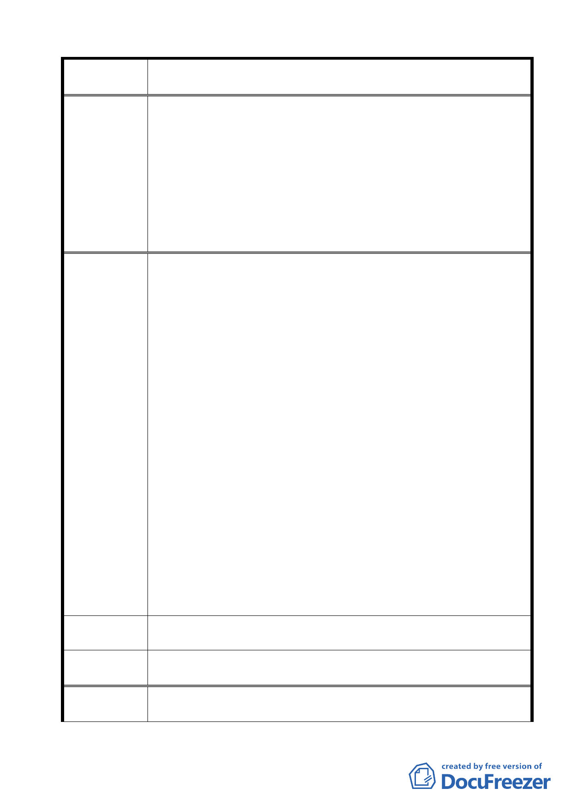

案名
委員會議
決議
陳情理由五
建議辦法
委員會議
決議
陳情理由六
變更臺北市士林區陽明山山仔后地區第二種住宅區為特定住宅區
細部計畫案
1.有關本項陳情市府業說明，市府業於 96 年 9 月 28 日公告登錄區
內 22 棟歷史建築，97 年 6 月 17 日公告登錄「陽明山美軍宿舍
群」為本市文化景觀，本計畫並以該歷史建築及文化景觀座落
區域變更為特定住宅區（一），允許適當商業活動進駐，以提升
公眾親近、體驗與使用此一環境之機會。
2.本案除市府本次會議所送修正計畫書第 2-20 頁（四）文字修正
為「建築基地地面高度設計：建築基地地面設計以維持原地形
地面為原則，但經整地後基地地面高度不得超過 1.2 公尺」外，
其餘依市府本次會議所送修正計畫書內容通過。
計畫書第 6 頁，提到 4 項目標，讓我們一一檢驗:
1.保護國家土地資源，提昇公有土地的公共使用--- 未指定公共使
用區，如何提昇公有土地的公共使用? 如何保護國家土地資源?
2.特殊地景（含歷史建築與其他保存狀況良好之原美軍宿舍建築
及周邊環境) 的保存維護與再利用---尚未定，都發局未依都發法
第 15 條重擬山仔后的主要計畫，指定保存區， 保存再利用只
是空談。
3.建構生態社區，落實永續發展理念---對區內以登錄的老樹，未
規定「原地保留」，談何生態社區永續發展?
4.整合地區資源，活絡地區發展 --- 如果依計畫書執行，只會活
絡少數開發商的存款，這地區獨一無二的資源就是這十幾公頃
美麗無法取代的美軍社區。難道這真的是山仔后居民的命運
嗎 ? 50 年前土地強被徵收，自己的土地變成特區，好似住在美
國的殖民地旁，還得進到禁區討生活，好不容易等美國人走了，
我們經常把永續經營環保生態城市掛在口中的政府，居然不顧
及大多數山仔后居民的意見，逆向操作，用保護生態文資產的
美麗口號，再一度出賣山仔后給有錢人蓋豪宅，用都市設計管
制替這些住在豪宅的人打造一個不受干擾的優質環境，山仔后
真正的居民們又一次面臨 50 年前的情景，又一次被政府排斥!
現在他們走在美軍社區中，還可享受山景綠意，將來，只能走
在類似監獄高高的圍牆中間。
4 大目標，像在喊口號，最近，政府常警告商人不可作誇大不實
的廣告，否則將重罰;看完計畫書，不禁要問：誰來懲處都發局 ?
同編號 2 決議內容。
報載教育局委託北投文化國小的校長黃三吉先生，作「英語村」
的規劃案，需 10 公頃地，經費大約 9 億，他心目中的地點之一是
24